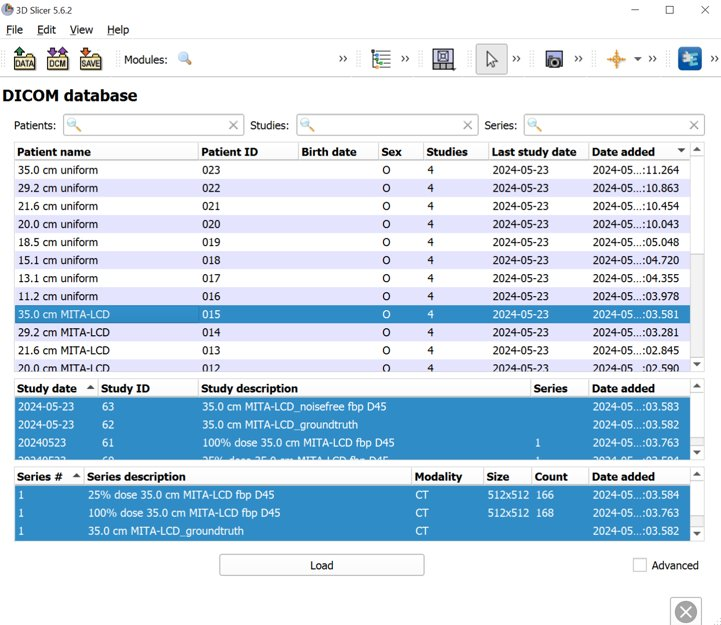
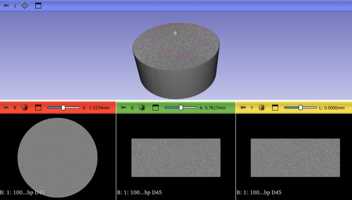

Usage¶
Intended Purpose¶
The pediatricIQphantom phantom generation and CT simulation tool is intended for evaluating the patient size dependence of nonlinear, data-driven image denoising and processing algorithms by providing digital versions of standard image quality phantoms, the MITA-LCD phantom and CTP404 module of the Catphan 600 phantom. Evaluating the patient size dependence of denoising algorithms is important when considering the performance of these devices in pediatric populations[1]. This is due to the smaller fields of view (FOV) associated with pediatric protocols which alters the image texture, an important factor when training and testing data-drive denoising methods.
Intended users are CT device developers and image denoising and processing software developers. Advanced nonlinear CT image reconstruction and denoising methods (products code JAK, QIH, LLZ among others) includes statistically iterative, model-based iterative and deep learning-based image reconstruction and denoising methods.
Command Line interface¶
The quickest and simplest way to start generating new datasets with different parameters is using the command line interface tool make_phantoms and modifying the provided configuration toml files. The examples below illustrate different scenarios that can be experimented with using the command line tool and config files.
The purpose of this example is to illustrate how to batch several simulations into a single config .toml file and how to update parameters while keeping everything else the same. This example is available in the examples folder or alternatively can be run using the following terminal command:
python make_phantoms.py configs/multiple_recon_kernels.toml
The key difference in this config file compared to the default or test configs is that multiple simulations are batched in a single config file by repeating the [[simulation]] toml header for each new simulation to add to the batch. Note in toml this is referred to as a nested table.
# multiple_recon_kernels.toml
# This config file demonstrates how to run 4 unique simulations procedurally varying parameters
[[simulation]]
# directories
image_directory = "results/multiple_recon_kernels"
# phantoms
model = ['CCT189'] # <-- current options include ['CTP404', 'MITA-LCD', 'UNIFORM']
diameter = [112, 131, 151, 185, 200, 292, 350] # <-- units in mm
reference_diameter = 200 # <-- diameter in mm of the real phantom for comparison
# acquisition
framework = "MIRT" # CT simulation framework options include ['MIRT'] <https://github.com/JeffFessler/mirt>
nsims = 200 # <-- number of simulations to perform with different noise instantiations
ndetectors = 880 # number of detector columns (set it to be large enough to cover the projected FOV to avoid truncation)
nangles = 1160 # <-- number of views in a rotation (na=1160 based on ZengEtAl2015-IEEE-NuclearScience-v62n5:"A Simple Low-Dose X-Ray CT Simulation From High-Dose Scan")
aec_on = true # (aec built in to ped xcat) <-- 'aec' = automatic exposure control, when `true`, it ensures constant noise levels for all `patient_diameters` (see `reference_dose_level` for more info)
add_noise = true # <-- if true adds Poisson noise, noise magnitude set by `reference_dose_level`, noise texture set by reconstructed field of view (cuttently fov = 110# patient_diameter)
full_dose = 3e5 # <-- units of photons per pixel
dose_level = [0.1, 0.25, 1.00] # <-- units of photons, this expression is evaluated by matlab, so keep in this format '[xx, yy, zz]'
# acquisition geometry # CT geometry (the following parameter values simulate Siemens Force)
sid = 595 #(mm) source-to-isocenter distance (value based on AAPM LDCT data dicom header)
sdd = 1085.6 # source-to-detector distance
# isocenter-to-detector distance dod = sdd - sid
detector_size = 1 # detector column size
detector_offset = 1.25 # lateral shift of detector
# reconstruction
fov = 340 # <-- FOV in mm of adult protocol used in scanning real physical phantom for comparison
matrix_size = 512 # <-- reconstructed matrix size in pixels (square, equal on both sides)
fbp_kernel = 'hanning,2.05' # 'hanning,xxx', xxx = the cutoff frequency, see fbp2_window.m in MIRT for details.
[[simulation]]
fbp_kernel = 'hanning,0.85'
[[simulation]]
model = ['CTP404'] # <-- current options include [CCT189, CTP404]
fbp_kernel = 'hanning,2.05'
dose_level = [1.0]
[[simulation]]
fbp_kernel = 'hanning,0.85'
Here multiple simulations are run, note the repeated header blocks [[simulation]] indicate the start of a new experiment. Any parameters set in the first simulation, (the first [[simulation]] above), override the default parameters. In each subsequent [[simulation]] an new provided settings will update the scan settings, otherwise all other parameters will carry over from the previous simulation.
For example:
{'image_directory': 'results/multiple_recon_kernels',
'model': ['CCT189'],
'diameter': [112, 131, 151, 185, 200, 292, 350],
'framework': 'MIRT',
'nsims': 200,
'nangles': 1160,
'aec_on': True,
'add_noise': True,
'full_dose': 300000.0,
'dose_level': [0.1, 0.25, 1.0],
'sid': 595,
'sdd': 1085.6,
'ndetectors': 880,
'detector_size': 1,
'detector_offset': 1.25,
'fov': 340,
'matrix_size': 512,
'fbp_kernel': 'hanning,2.05'}
In the second simulation in the config file only the fbp_kernel is updated
[[simulation]]
fbp_kernel = 'hanning,0.85'
This results in only updating the fbp_kernel element leaving all other elements the same from the previous simulation.
Then by third simulation a new phantom is introduced, CTP404, and we wish to only image it at full dose and with the first of the two kernels being investigated (sharp and smooth):
[[simulation]]
model = ['CTP404']
dose_level = [1.0]
fbp_kernel = 'hanning,2.05'
Finally by the fourth we repeat the previous simulation but with the second kernel, the smooth kernel
[[simulation]]
fbp_kernel = 'hanning,0.85'
This is done in parsing the config files using the python dict update method pediatricIQphantoms.make_phantoms()
Reproducing the pediatricIQphantoms dataset
warning: this may take several hours to complete (14 hours on my system), but is recommended if you want to reproduce the pediatricIQphantoms dataset with different scanner or phantom characteristics using the config file editing processes described in the previous example.
make_phantoms configs/pediatricIQphantoms.toml
Note that this example of the executable make_phantoms that is installed and added to your python after installing the pediatricIQphantoms python package (see install instructions for details)
Viewing images¶
The outputs of the simulation are DICOM CT images. The notebook 01_viewing_images.ipynb discusses ways to view and interact with DICOM images produced in 00_running_simulations.ipynb
run_batch_sim outputs simulated datasets in the following directory structure:
$ tree results/test -P *_000.dcm | head -n 15
results/test
├── CCT189
│ ├── diameter112mm
│ │ ├── dose_025
│ │ │ └── fbp hanning205
│ │ │ └── 11.2 cm CCT189_000.dcm
│ │ └── dose_100
│ │ └── fbp hanning205
│ │ └── 11.2 cm CCT189_000.dcm
│ └── diameter292mm
│ ├── dose_025
│ │ └── fbp hanning205
│ │ └── 29.2 cm CCT189_000.dcm
│ └── dose_100
│ └── fbp hanning205
CSV files are output with each batched simulation which include file path and all relevant acquisition parameters, for example:
Name |
series |
effective diameter [cm] |
pediatric subgroup |
phantom |
scanner |
Dose [%] |
kernel |
FOV [cm] |
file |
|---|---|---|---|---|---|---|---|---|---|
11.2 cm CTP404 |
simulation |
11.2 |
infant |
CTP404 |
Siemens Definition AS+ (simulated) |
25 |
fbp D45 |
34 |
pediatricIQphantoms/CTP404/diameter112mm/dose_025/fbp hanning205/11.2 cm CTP404_000.dcm |
11.2 cm CTP404 |
simulation |
11.2 |
infant |
CTP404 |
Siemens Definition AS+ (simulated) |
25 |
fbp D45 |
34 |
pediatricIQphantoms/results/pediatricIQphantoms/CTP404/diameter112mm/dose_025/fbp hanning205/11.2 cm CTP404_001.dcm |
35.0 cm CTP404 |
noise free |
35 |
infant |
CTP404 |
Siemens Definition AS+ (simulated) |
fbp D45 |
34 |
pediatricIQphantoms/CTP404/diameter350mm/35.0 cm CTP404_noisefree.dcm |
|
35.0 cm CTP404 |
ground truth |
35 |
infant |
CTP404 |
Siemens Definition AS+ (simulated) |
fbp D45 |
34 |
pediatricIQphantoms/CTP404/diameter350mm/35.0 cm CTP404_groundtruth.dcm |
Drag and drop the unzipped dataset into 3D Slicer to automatically load the dataset into Slicer’s DICOM database
{kind=link}

{kind=link}

Examples of other viewers:
SNAP ITK Originally developed for 3D medical imaging segmentation
Fiji/ImageJ originally developed for 2D biomedical imaging analysis
Conclusions¶
This section introduced several ways to interact with pediatricIQphantom simulation tools and view the DICOM images produced by run_batch_sim.
Next see the notebooks for practical examples 00_running_simulations.ipynb
References¶
Nelson BJ, Kc P, Badal A, Jiang L, Masters SC, Zeng R. Pediatric evaluations for deep learning CT denoising. Medical Physics. 2024;51(2):978-990. doi:10.1002/mp.16901
Zeng R, Lin CY, Li Q, et al. Performance of a deep learning-based CT image denoising method: Generalizability over dose, reconstruction kernel, and slice thickness. Med Phys. 2022;49(2):836-853. doi:10.1002/mp.15430